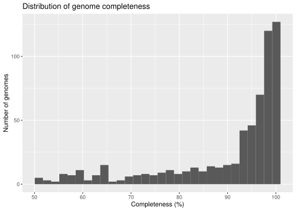
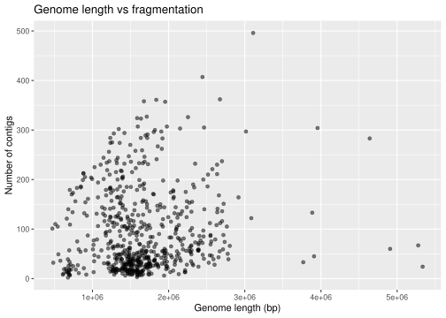

library("tidyverse")Project
1. Background
The human vaginal microbiome plays an important role in reproductive health and protection against infections. It is usually dominated by Lactobacillus species, which keep the environment acidic and prevent the growth of harmful microorganisms. However, the vaginal microbiome can differ between people and across health states. Other bacteria such as Gardnerella, Atopobium, and Prevotella often appear during dysbiosis or bacterial vaginosis.
Recent advances in metagenomic sequencing allow researchers to rebuild individual microbial genomes from complex microbial communities. These reconstructed genomes are called metagenome-assembled genomes (MAGs). MAGs give new insight into the genetic makeup and functions of microorganisms that cannot easily be grown in the lab. Databases such as MGnify collect MAGs from many human and environmental microbiomes, including the vaginal microbiome, and provide useful but often un-standardized metadata.
The dataset used in this project, called genomes-all_metadata.tsv, comes from MGnify’s vaginal microbiome genome catalogue. It contains thousands of bacterial MAGs with information on assembly quality (genome length, N50, GC content, completeness, contamination), taxonomic classification, and limited geographical data. Like many real biological datasets, it includes inconsistencies, missing values, and mixed formats.
2. Aim
The aim of this project is to clean, explore, and analyse the genome meta-data-set from the human vaginal microbiome. With this project we aim to uncover patterns in genome quality, taxonomic composition, and ecological characteristics, while demonstrating the principles of reproducible and collaborative data science in R.
In this project we will:
- Tidy and standardize the raw meta-data-set by addressing missing values, harmonizing column formats, and parsing the hierarchical taxonomic lineage into separate levels (phylum to species).
- Investigate genome quality metrics such as completeness, contamination, GC content, and genome length to identify potential biases or systematic differences among bacterial groups.
- Explore taxonomic composition, visualizing which phyla and genera dominate the vaginal microbiome MAG catalogue.
- Assess ecological trends, such as whether smaller or low-GC genomes correspond to specific bacterial taxa or ecological roles within the vaginal environment.
- Examine geographical metadata to identify sampling biases or gaps across studies or regions.
Through these analyses, we aim to gain a deeper understanding of the genomic diversity of the vaginal microbiome, while showcasing the entire data science workflow using the tidyverse systems in R.
3. Load Libraries
4. Load Data
Below we run the loading script that downloads the raw data and writes 01_dat_load.tsv.
1. Load libraries
2. Download data
First of all, we create directories data and data/_raw if they don’t already exist. Then we download the data from the EBI website below into the raw data directory:
3. Load data
The data is a tab separated file separated, so it is loaded into R using read_tsv from the read_r library:
Rows: 618 Columns: 20
── Column specification ────────────────────────────────────────────────────────
Delimiter: "\t"
chr (10): Genome, Genome_type, Genome_accession, Species_rep, Lineage, Sampl...
dbl (10): Length, N_contigs, N50, GC_content, Completeness, Contamination, r...
ℹ Use `spec()` to retrieve the full column specification for this data.
ℹ Specify the column types or set `show_col_types = FALSE` to quiet this message.4. Saving the data
Saving the loaded data again into “01_dat_load.tsv”-file located in the data directory, to keep a consistent overview/naming of data through the project.
5. Clean data
Cleans the loaded data and writes it to 02_dat_clean.tsv.
Load libraries
Load data
Loading the data saved in the 01_dat_load.tsv file
Rows: 618 Columns: 20
── Column specification ────────────────────────────────────────────────────────
Delimiter: "\t"
chr (10): Genome, Genome_type, Genome_accession, Species_rep, Lineage, Sampl...
dbl (10): Length, N_contigs, N50, GC_content, Completeness, Contamination, r...
ℹ Use `spec()` to retrieve the full column specification for this data.
ℹ Specify the column types or set `show_col_types = FALSE` to quiet this message.Data preparation
Using the str command to investigate, what the data looks like:
spc_tbl_ [618 × 20] (S3: spec_tbl_df/tbl_df/tbl/data.frame)
$ Genome : chr [1:618] "MGYG000303700" "MGYG000303701" "MGYG000303702" "MGYG000303703" ...
$ Genome_type : chr [1:618] "MAG" "MAG" "MAG" "MAG" ...
$ Length : num [1:618] 678213 1500176 1210062 1706016 703182 ...
$ N_contigs : num [1:618] 2 18 44 27 7 112 185 90 12 57 ...
$ N50 : num [1:618] 466332 112881 48790 89653 111709 ...
$ GC_content : num [1:618] 47.8 42.4 26.4 44.6 47.8 ...
$ Completeness : num [1:618] 63.7 87.8 94.8 93.7 63.7 ...
$ Contamination : num [1:618] 0 0 0.55 1.06 0 0.36 0.72 0.09 0 0.85 ...
$ rRNA_5S : num [1:618] 0 0 0 0 0 0 0 0 0 0 ...
$ rRNA_16S : num [1:618] 99.7 0 0 0 99.7 ...
$ rRNA_23S : num [1:618] 99.6 0 0 0 99.6 ...
$ tRNAs : num [1:618] 20 20 9 20 20 19 7 18 20 20 ...
$ Genome_accession: chr [1:618] "CAMPLK01" "CAMPLL01" "CAMPLM01" "CAMPLN01" ...
$ Species_rep : chr [1:618] "MGYG000303700" "MGYG000303918" "MGYG000303789" "MGYG000304079" ...
$ Lineage : chr [1:618] "d__Bacteria;p__Patescibacteria;c__Saccharimonadia;o__Saccharimonadales;f__Nanoperiomorbaceae;g__Nanoperiomorbus"| __truncated__ "d__Bacteria;p__Bacillota_A;c__Clostridia;o__Saccharofermentanales;f__Fastidiosipilaceae;g__KA00274;s__KA00274 sp902373515" "d__Bacteria;p__Bacillota;c__Bacilli;o__Staphylococcales;f__Gemellaceae;g__Gemella;s__Gemella asaccharolytica" "d__Bacteria;p__Bacillota_A;c__Clostridia;o__Saccharofermentanales;f__Fastidiosipilaceae;g__Mageeibacillus;s__Ma"| __truncated__ ...
$ Sample_accession: chr [1:618] "SAMEA111346158" "SAMEA111346148" "SAMEA111346137" "SAMEA111346154" ...
$ Study_accession : chr [1:618] "ERP138373" "ERP138373" "ERP138373" "ERP138373" ...
$ Country : chr [1:618] "not provided" "not provided" "not provided" "not provided" ...
$ Continent : chr [1:618] "not provided" "not provided" "not provided" "not provided" ...
$ FTP_download : chr [1:618] "ftp://ftp.ebi.ac.uk/pub/databases/metagenomics/mgnify_genomes/human-vaginal/v1.0/all_genomes/MGYG0003037/MGYG00"| __truncated__ "ftp://ftp.ebi.ac.uk/pub/databases/metagenomics/mgnify_genomes/human-vaginal/v1.0/all_genomes/MGYG0003039/MGYG00"| __truncated__ "ftp://ftp.ebi.ac.uk/pub/databases/metagenomics/mgnify_genomes/human-vaginal/v1.0/all_genomes/MGYG0003037/MGYG00"| __truncated__ "ftp://ftp.ebi.ac.uk/pub/databases/metagenomics/mgnify_genomes/human-vaginal/v1.0/all_genomes/MGYG0003040/MGYG00"| __truncated__ ...
- attr(*, "spec")=
.. cols(
.. Genome = col_character(),
.. Genome_type = col_character(),
.. Length = col_double(),
.. N_contigs = col_double(),
.. N50 = col_double(),
.. GC_content = col_double(),
.. Completeness = col_double(),
.. Contamination = col_double(),
.. rRNA_5S = col_double(),
.. rRNA_16S = col_double(),
.. rRNA_23S = col_double(),
.. tRNAs = col_double(),
.. Genome_accession = col_character(),
.. Species_rep = col_character(),
.. Lineage = col_character(),
.. Sample_accession = col_character(),
.. Study_accession = col_character(),
.. Country = col_character(),
.. Continent = col_character(),
.. FTP_download = col_character()
.. )
- attr(*, "problems")=<externalptr> The data consist of a data-frame with 618 observations and 20 variables. We recognize that observations with no value found has the identifier “not provided”. Additionally one variable contains phylogenetic information that can be split into different variable containing information about the different classes of the evolutionary history.
Split data
We want to split the data in the “lineage” variable into multiple variables to store the information about each of the phylogenetic classes individually. First we investigate the data in the lineage variable:
# A tibble: 10 × 1
Lineage
<chr>
1 d__Bacteria;p__Bacillota_A;c__Clostridia;o__Tissierellales;f__Peptoniphilace…
2 d__Bacteria;p__Pseudomonadota;c__Gammaproteobacteria;o__Burkholderiales;f__B…
3 d__Bacteria;p__Bacillota_A;c__Clostridia;o__Saccharofermentanales;f__DTU023;…
4 d__Bacteria;p__Bacteroidota;c__Bacteroidia;o__Bacteroidales;f__UBA932;g__Cry…
5 d__Bacteria;p__Fusobacteriota;c__Fusobacteriia;o__Fusobacteriales;f__Leptotr…
6 d__Bacteria;p__Bacillota_C;c__Negativicutes;o__Veillonellales;f__Dialisterac…
7 d__Bacteria;p__Bacillota_A;c__Clostridia;o__Tissierellales;f__Peptoniphilace…
8 d__Bacteria;p__Bacillota_A;c__Clostridia;o__Saccharofermentanales;f__Fastidi…
9 d__Bacteria;p__Bacillota;c__Bacilli;o__Lactobacillales;f__Aerococcaceae;g__A…
10 d__Bacteria;p__Bacteroidota;c__Bacteroidia;o__Bacteroidales;f__Bacteroidacea…By investigating the data it is seen that each string of phylogenetic information consist of identifiers for each of the different classes in the taxonomic rank. These identifiers are:
d = domain
p = phylum
c = class
o = order
f = family
g = genus
s = species
We want to start with converting all “not provided” to NA across all character columns. Then we want to split the “lineage” variable into its seven taxonomic ranks to store the information about each of the phylogenetic classes individually. Then we want to extract each taxonomic rank and remove prefixes. And convert empty strings to NA in the new taxonomy columns.
We then remove the GTDB suffixes (e.g. “_A”) to streamline taxonomies. Lastly we remove columns that will not be used in our analysis.
We then remove the GTDB suffixes (e.g. “_A”) to streamline taxonomies. We also remove the
Viewing the data
Vieweing the top 10 rows of the split data to see the new structure.
# A tibble: 10 × 8
Genome Domain Phylum Class Order Family Genus Species
<chr> <chr> <chr> <chr> <chr> <chr> <chr> <chr>
1 MGYG000303700 Bacteria Patescibacteria Saccharimo… Sacc… Nanop… Nano… Nanope…
2 MGYG000303701 Bacteria Bacillota Clostridia Sacc… Fasti… KA00… KA0027…
3 MGYG000303702 Bacteria Bacillota Bacilli Stap… Gemel… Geme… Gemell…
4 MGYG000303703 Bacteria Bacillota Clostridia Sacc… Fasti… Mage… Mageei…
5 MGYG000303704 Bacteria Patescibacteria Saccharimo… Sacc… Nanop… Nano… Nanope…
6 MGYG000303705 Bacteria Bacteroidota Bacteroidia Bact… Bacte… Prev… <NA>
7 MGYG000303706 Bacteria Bacillota Clostridia Tiss… Pepto… Pept… Pepton…
8 MGYG000303707 Bacteria Bacillota Bacilli Lact… Lacto… Lact… Lactob…
9 MGYG000303708 Bacteria Bacillota Clostridia Sacc… Fasti… KA00… KA0027…
10 MGYG000303709 Bacteria Patescibacteria Saccharimo… Sacc… Nanop… Nano… Nanope…Saving the data
Saving the cleaned data into 02_dat_clean.tsv file located in the data directory.
6. Augment
Added agumentation the cleaned data and writes it to 03_dat_aug.tsv.
Load libraries
Load data
Loading the data saved in the 02_dat_clean.tsv file
Rows: 618 Columns: 21
── Column specification ────────────────────────────────────────────────────────
Delimiter: "\t"
chr (11): Genome, Genome_type, Country, Continent, Domain, Phylum, Class, Or...
dbl (10): Length, N_contigs, N50, GC_content, Completeness, Contamination, r...
ℹ Use `spec()` to retrieve the full column specification for this data.
ℹ Specify the column types or set `show_col_types = FALSE` to quiet this message.Augment data
A new table is created, containing info on the quality of the MAGs. This includes completeness quality, contamination quality as well as overall genome quality.
The new data table is then joined with the cleaned data frame using left join.
Saving the data
Saving the cleaned data into 03_dat_aug.tsv file located in the data directory.
7. Describe
Described the cleaned data.
1. Load libraries
2. Load data
Loading the data saved in the 03_dat_aug.tsv file
Rows: 618 Columns: 24
── Column specification ────────────────────────────────────────────────────────
Delimiter: "\t"
chr (14): Genome, Genome_type, Country, Continent, Domain, Phylum, Class, Or...
dbl (10): Length, N_contigs, N50, GC_content, Completeness, Contamination, r...
ℹ Use `spec()` to retrieve the full column specification for this data.
ℹ Specify the column types or set `show_col_types = FALSE` to quiet this message.3. Data overview
3.1 Structure of the dataset
Using the str command to investigate, what the data looks like:
Rows: 618
Columns: 24
$ Genome <chr> "MGYG000303700", "MGYG000303701", "MGYG000303702…
$ Genome_type <chr> "MAG", "MAG", "MAG", "MAG", "MAG", "MAG", "MAG",…
$ Length <dbl> 678213, 1500176, 1210062, 1706016, 703182, 25420…
$ N_contigs <dbl> 2, 18, 44, 27, 7, 112, 185, 90, 12, 57, 18, 86, …
$ N50 <dbl> 466332, 112881, 48790, 89653, 111709, 34925, 101…
$ GC_content <dbl> 47.78, 42.36, 26.37, 44.60, 47.82, 48.00, 34.83,…
$ Completeness <dbl> 63.68, 87.83, 94.84, 93.74, 63.68, 97.92, 85.20,…
$ Contamination <dbl> 0.00, 0.00, 0.55, 1.06, 0.00, 0.36, 0.72, 0.09, …
$ rRNA_5S <dbl> 0.00, 0.00, 0.00, 0.00, 0.00, 0.00, 0.00, 0.00, …
$ rRNA_16S <dbl> 99.74, 0.00, 0.00, 0.00, 99.74, 0.00, 0.00, 0.00…
$ rRNA_23S <dbl> 99.56, 0.00, 0.00, 0.00, 99.56, 0.00, 0.00, 0.00…
$ tRNAs <dbl> 20, 20, 9, 20, 20, 19, 7, 18, 20, 20, 20, 18, 20…
$ Country <chr> NA, NA, NA, NA, "China", NA, NA, "China", "China…
$ Continent <chr> NA, NA, NA, NA, "Asia", NA, NA, "Asia", "Asia", …
$ Domain <chr> "Bacteria", "Bacteria", "Bacteria", "Bacteria", …
$ Phylum <chr> "Patescibacteria", "Bacillota", "Bacillota", "Ba…
$ Class <chr> "Saccharimonadia", "Clostridia", "Bacilli", "Clo…
$ Order <chr> "Saccharimonadales", "Saccharofermentanales", "S…
$ Family <chr> "Nanoperiomorbaceae", "Fastidiosipilaceae", "Gem…
$ Genus <chr> "Nanoperiomorbus", "KA00274", "Gemella", "Mageei…
$ Species <chr> "Nanoperiomorbus sp004136275", "KA00274 sp902373…
$ Completeness_quality <chr> "Medium", "Medium", "High", "High", "Medium", "H…
$ Contamination_quality <chr> "High", "High", "High", "High", "High", "High", …
$ Overall_quality <chr> "Medium", "Medium", "High", "High", "Medium", "H…The dataset contains 618 metagenome-assembled genomes (MAGs) and 24 variables. These span assembly statistics, taxonomic annotation, genomic features, geographical metadata, and derived quality metrics. Inspecting the structure helps confirm that the dataset is tidy (each variable is a column, each observation is a row).
3.2 Missing values in key variables
A key step in data description is identifying missing values. Here we summarize how many missing entries each variable contains.
# A tibble: 6 × 2
variable n_missing
<chr> <int>
1 Species 138
2 Country 56
3 Continent 56
4 Genus 6
5 Genome 0
6 Genome_type 0Missing data is concentrated in four variables: Species, Country, Continent, and Genus. Species-level taxonomy is often unavailable for MAGs, explaining the high degree of missingness. Geographical metadata is also sparse in many public datasets, reflecting inconsistent reporting in the source studies. All other variables, including assembly metrics and higher taxonomic ranks, are fully complete.
4. Taxonomic composition
Understanding taxonomic composition helps describe the microbial diversity represented in the MAG catalogue. We summarize the number of genomes assigned to each phylum and visualise their distribution.
4.1 Phylum counts
Counting the different Phylums in the dataset
# A tibble: 8 × 2
Phylum n
<chr> <int>
1 Bacillota 253
2 Actinomycetota 212
3 Bacteroidota 97
4 Pseudomonadota 19
5 Fusobacteriota 14
6 Patescibacteria 14
7 Campylobacterota 6
8 Synergistota 34.2 Barplot of phyla
Plotting the different Phylums in the dataset

The most represented phyla reflect the typical composition of the human vaginal microbiome (Bacillota, Actinobacteriota). Less common phyla such as Patescibacteria appear at lower frequencies and may represent niche taxa or poorly sampled lineages.
6. MAG quality
In metagenomics, the reliability of a reconstructed genome depends on two key metrics: completeness (how much of the genome is recovered) and contamination (how much foreign DNA is incorrectly included). To facilitate interpretation, we also use categorical quality variables derived from these continuous measures: Completeness_quality, Contamination_quality, and Overall_quality. Together, these metrics provide an overview of the assembly reliability and the overall quality of the MAG catalogue.
6.1 Distribution of completeness
We first examine the distribution of completeness values across all MAGs. Completeness estimates the proportion of the genome recovered during assembly, with higher values indicating more complete and reliable genomes.

The distribution shows that genome completeness is generally high, with many MAGs exceeding 80–90%. This suggests that the majority of genomes in the dataset are sufficiently complete for downstream biological analyses.
6.2 Distribution of contamination
Next, we assess contamination levels, which reflect how much non-target DNA is mistakenly included in each MAG. Low contamination is essential for ensuring that each genome represents a single biological organism.

Contamination values are generally very low, with most MAGs showing contamination close to 0%.
This indicates strong assembly quality and suggests that the majority of genomes fall within accepted thresholds for medium to high MAG quality.
6.3 Completeness-based quality categories
To simplify interpretation, completeness values are grouped into categorical quality assignments (e.g., high, medium, low).
These categories help summarize the distribution of assembly completeness across the dataset.
# A tibble: 2 × 2
Completeness_quality n
<chr> <int>
1 High 429
2 Medium 189We visualize the distribution of completeness categories to assess the overall completeness profile of the dataset.

Most genomes fall into the medium and high completeness categories, confirming the generally strong completeness characteristics observed in the continuous distribution.
6.4 Contamination-based quality categories
Similar to completeness, contamination values are grouped into quality categories. This provides a simplified overview of how many MAGs fall above or below contamination thresholds commonly used in MAG quality standards.
# A tibble: 1 × 2
Contamination_quality n
<chr> <int>
1 High 618All the genomes fall into the high contamination-quality category (very low contamination), reinforcing the observation that contamination levels are generally well-controlled in this dataset.
6.5 Overall MAG quality category
The overall quality category combines both completeness and contamination thresholds into a single metric. This provides the most useful summary when determining which genomes are suitable for specific downstream analyses.
# A tibble: 2 × 2
Overall_quality n
<chr> <int>
1 High 429
2 Medium 189We visualize the number of genomes in each overall quality category.

Most genomes fall into the medium and high overall quality categories, while only a small number are classified as low quality. This confirms that the dataset contains predominantly reliable MAGs that are suitable for biological interpretation. These quality categories can later be used to filter or stratify analyses depending on the research question.
7 Assembly statistics
Assembly statistics provide insight into the structural properties of metagenome-assembled genomes (MAGs). Characteristics such as genome length and contig count reflect the degree of completeness and fragmentation of each assembly, and they help assess whether the reconstructed genomes are biologically plausible and suitable for further interpretation.
Here, we explore three key aspects: genome size, contig count, and the relationship between genome length and fragmentation.
7.1 Genome length distribution
Genome length is a basic but informative assembly metric. It varies across bacterial taxa due to differences in genome reduction, metabolic capabilities, ecological specialization, and evolutionary history. Examining the distribution of genome lengths allows us to understand the range of genome sizes represented in the dataset and identify unusual or outlier assemblies.

Genome sizes range from roughly 0.6 Mbp to more than 3 Mbp, which is typical for bacterial taxa found in the vaginal microbiome. Smaller genomes often reflect host-adapted or metabolically reduced bacteria, whereas larger genomes may indicate more metabolically versatile organisms. The observed range therefore aligns with expectations for vaginal microbial diversity and suggests no major abnormalities in genome size distributions.
7.2 Number of contigs
The number of contigs in a MAG reflects how fragmented the assembly is. A low number of contigs indicates a more complete, contiguous assembly, while higher contig counts indicate fragmentation, often reflecting assembly challenges such as low coverage, strain heterogeneity, or complex genomic regions.

The distribution shows substantial variation in contig counts across MAGs. While some genomes are assembled into relatively few contigs, others remain highly fragmented - a common characteristic of metagenomic assemblies. This variation highlights the importance of considering assembly fragmentation when interpreting genome structure and gene content.
7.3 Length vs number of contigs
To further understand assembly quality, we explore the relationship between genome length and assembly fragmentation. Longer genomes may naturally require more contigs, but excessively high fragmentation for a given genome size may indicate problematic or low-confidence assemblies.

The scatterplot shows a loose association between genome length and the number of contigs, as expected. However, several outliers exhibit unusually high fragmentation relative to their genome size, which may indicate assembly challenges.
8. GC content
GC content represents the proportion of guanine (G) and cytosine (C) bases in a genome. It is an important genomic characteristic linked to evolutionary lineage, genome stability, mutational patterns, host adaptation, and environmental niche.
Examining the GC content distribution across the MAG catalogue provides insight into the diversity of bacterial taxa present in the vaginal microbiome and can help identify unusual or atypical genomes.
8.1 GC content distribution
We begin by visualizing the distribution of GC content across all genomes. MAGs originating from different bacterial phyla typically exhibit distinct GC signatures, making this metric useful for broadly comparing genome characteristics across the dataset.

GC content across the genomes spans a broad range-from approximately 25% up to more than 70%, indicating substantial genomic diversity within the vaginal microbiome. Most genomes cluster in the intermediate GC range (35–50%), which is typical for many common vaginal taxa, including Lactobacillus, Gardnerella, and Prevotella.
The presence of both low-GC and high-GC genomes reflects the contribution of multiple phylogenetic groups and suggests distinct evolutionary and ecological strategies among community members. Extreme GC values may point to highly specialized or unusual taxa and could be explored in later analyses.
9. Geographic metadata
Geographic metadata provides important ecological and epidemiological context for metagenomic studies. It can reveal where samples were collected, help identify potential biogeographic patterns, and highlight sampling gaps or biases in the dataset.
9.1 Availability of geographic information
We first examine how many genomes include a recorded continent of origin. This allows us to quantify the completeness of the geographic metadata and determine how representative the dataset may be across global regions.
# A tibble: 2 × 2
has_geography n
<lgl> <int>
1 FALSE 56
2 TRUE 562Only a subset of genomes includes geographic information, indicating incomplete metadata coverage. This is common in public metagenomic datasets, where sample-associated metadata is often missing or inconsistently reported. The absence of geographic context for many genomes limits the extent to which biogeographical conclusions can be drawn.
9.2 Genomes per continent
For genomes where geographic information is available, we summarize the number of genomes contributed from each continent
# A tibble: 4 × 2
Continent n
<chr> <int>
1 North America 435
2 Asia 99
3 <NA> 56
4 Europe 28We visualize the distribution of genomes across continents to highlight sampling imbalances.

The geographic distribution of genomes is uneven, with certain continents (USA and Asia) contributing the majority of available data. This reflects sampling bias, where research efforts and sequencing initiatives are concentrated in specific regions.
10. Descriptive summary
Overall, the dataset contains 618 vaginal MAGs with high completeness, low contamination, and diverse taxonomic representation. Genome features such as size and GC content fall within biologically plausible ranges. Missing values are limited primarily to species-level taxonomy and geographical metadata. The dataset is therefore well-suited for downstream comparative analyses, including quality assessment across taxa, genome feature correlations, and ecological interpretation.
8. Analysis 1
05_analysis_1.qmd: Here goes your first analysis
9. Analysis 2
06_analysis_2.qmd: Here goes your second analysis and so on